Examples
Examples.RmdInstallation
# Install the package from GitHub
devtools::install_github("yhhc2/machinelearnr")
# Load package
library("machinelearnr")Examples
All functions with example code is run in this section. The functions are listed below in alphabetical order with example code to illustrate how each function should be used. The example code should be very similar to the example code in the function reference.
To see detailed descriptions for each function, please visit the package’s website.
Examples for clustering
CalcOptimalNumClustersForKMeans()
example.data <- data.frame(x = c(18, 21, 22, 24, 26, 26, 27, 30, 31,
35, 39, 40, 41, 42, 44, 46, 47, 48, 49, 54, 35, 30),
y = c(10, 11, 22, 15, 12, 13, 14, 33, 39, 37, 44,
27, 29, 20, 28, 21, 30, 31, 23, 24, 40, 45))
#dev.new()
plot(example.data$x, example.data$y)
#Results should say that 3 clusters is optimal
output <- CalcOptimalNumClustersForKMeans(example.data, c("x", "y"))
elbow.plot <- output[[1]]
ch.and.asw.plot <- output[[2]]
#dev.new()
elbow.plot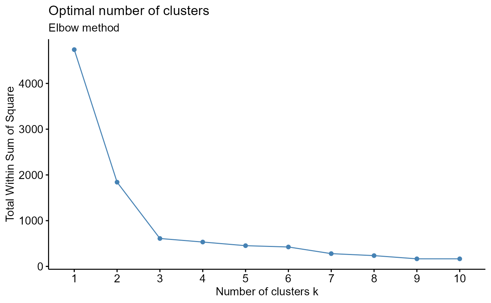
#dev.new()
ch.and.asw.plot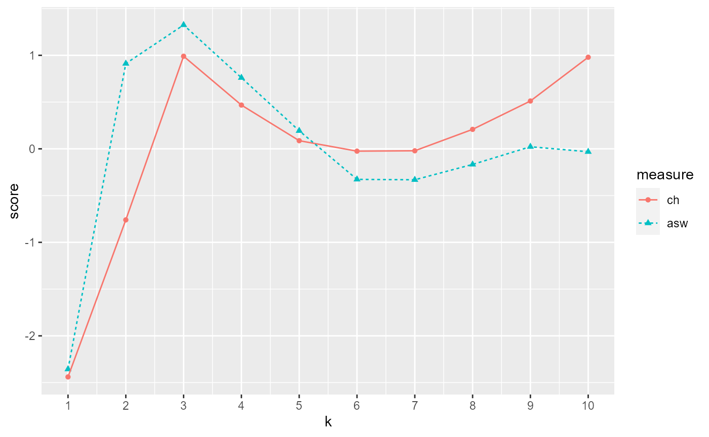
generate.2D.clustering.with.labeled.subgroup()
example.data <- data.frame(x = c(18, 21, 22, 24, 26, 26, 27, 30, 31, 35,
39, 40, 41, 42, 44, 46, 47, 48, 49, 54, 35, 30),
y = c(10, 11, 22, 15, 12, 13, 14, 33, 39, 37, 44, 27,
29, 20, 28, 21, 30, 31, 23, 24, 40, 45),
z = c(1, 1, 1, 1, 1, 1, 1, 1, 1, 1, 1, 1, 1,
1, 1, 1, 1, 1, 1, 1, 1, 1))
#dev.new()
plot(example.data$x, example.data$y)
km.res <- stats::kmeans(example.data[,c("x", "y", "z")], 3, nstart = 25, iter.max=10)
grouped <- km.res$cluster
pca.results <- prcomp(example.data[,c("x", "y", "z")], scale=FALSE)
actual.group.label <- c("A", "A", "A", "A", "A", "A", "A", "B", "B", "B", "B",
"B", "B", "B", "B", "B", "B", "B", "B", "B", "B", "B")
results <- generate.2D.clustering.with.labeled.subgroup(pca.results, grouped, actual.group.label)
#PC1 vs PC2
print(results[[1]])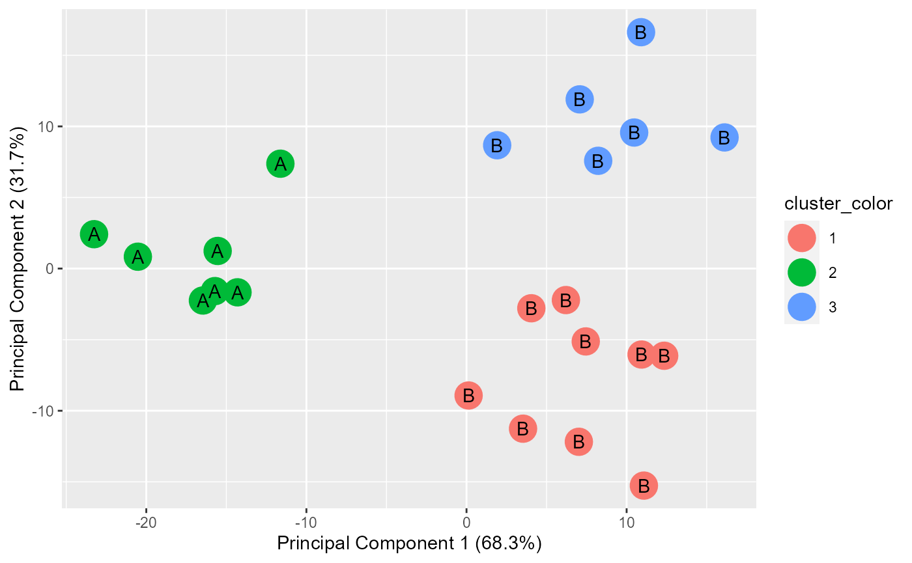
#PC1 vs PC3
print(results[[2]])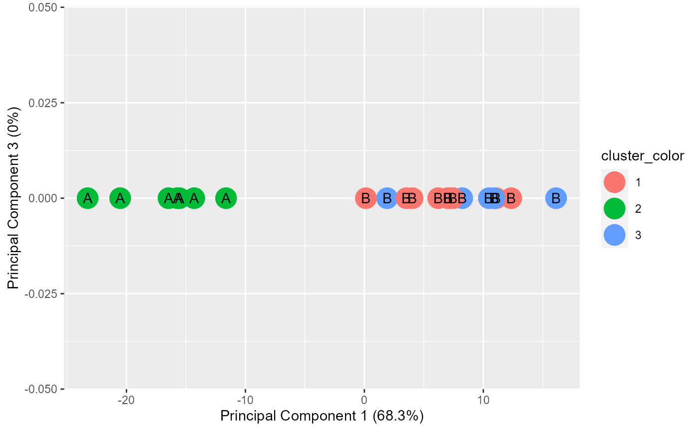
#Chi-square results
print(results[[3]])##
## Pearson's Chi-squared test
##
## data: tbl
## X-squared = 22, df = 2, p-value = 1.67e-05
#Table
print(results[[4]])## cluster.labels.input
## subgroup.labels.input 1 2 3
## A 0 7 0
## B 9 0 6generate.3D.clustering.with.labeled.subgroup()
example.data <- data.frame(x = c(18, 21, 22, 24, 26, 26, 27, 30, 31, 35,
39, 40, 41, 42, 44, 46, 47, 48, 49, 54, 35, 30),
y = c(10, 11, 22, 15, 12, 13, 14, 33, 39, 37, 44,
27, 29, 20, 28, 21, 30, 31, 23, 24, 40, 45),
z = c(1, 1, 1, 1, 1, 1, 1, 2, 2, 2, 2, 2, 2, 3,
3, 3, 3, 3, 3, 3, 3, 3))
#dev.new()
plot(example.data$x, example.data$y)
km.res <- stats::kmeans(example.data[,c("x", "y", "z")], 3, nstart = 25, iter.max=10)
grouped <- km.res$cluster
pca.results <- prcomp(example.data[,c("x", "y", "z")], scale=FALSE)
actual.group.label <- c("A", "A", "A", "A", "A", "A", "A", "B", "B", "B", "B",
"B", "B", "B", "B", "B", "B", "B", "B", "B", "B", "B")
results <- generate.3D.clustering.with.labeled.subgroup(pca.results, grouped, actual.group.label)
xlab.values <- results[[1]]
ylab.values <- results[[2]]
zlab.values <- results[[3]]
xdata.values <- results[[4]]
ydata.values <- results[[5]]
zdata.values <- results[[6]]
data.to.plot <- data.frame(xdata.values, ydata.values, zdata.values)
# #Interactive 3d plot, but cannot display in html or md
# rgl::rgl.bg(color = "white")
# rgl::plot3d(x= xdata.values, y= ydata.values, z= zdata.values,
# xlab = xlab.values, ylab = ylab.values, zlab = zlab.values, col=(grouped+1), pch=20, cex=2)
# rgl::text3d(x= xdata.values, y= ydata.values, z= zdata.values, text= actual.group.label, cex=1)
# rgl::rglwidget()
#Non-interactive 3d plot
s3d <- scatterplot3d::scatterplot3d(data.to.plot[,1:3], pch = 16, color=(grouped+1),
xlab = xlab.values, ylab = ylab.values,
zlab = zlab.values)
legend(s3d$xyz.convert(-30, 20, 1), legend = levels(as.factor(grouped)),
col = levels(as.factor(grouped+1)), pch = 16)
text(s3d$xyz.convert(data.to.plot[,1:3]), labels = actual.group.label,
cex= 0.7, col = "steelblue")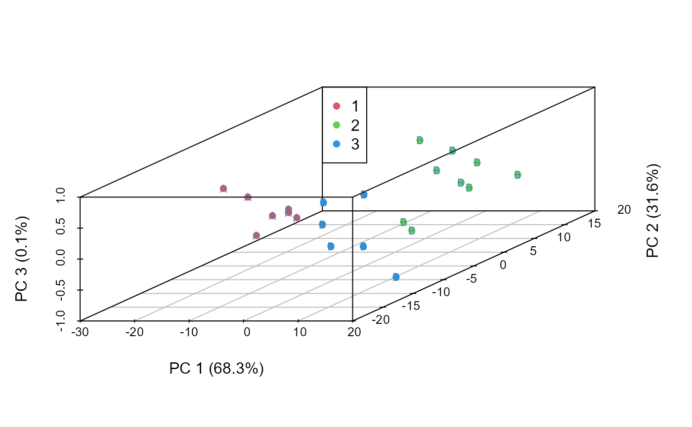
generate.plots.comparing.clusters()
example.data <- data.frame(x = c(18, 21, 22, 24, 26, 26, 27, 30, 31,
35, 39, 40, 41, 42, 44, 46, 47, 48, 49, 54, 35, 30),
y = c(10, 11, 22, 15, 12, 13, 14, 33, 39, 37, 44,
27, 29, 20, 28, 21, 30, 31, 23, 24, 40, 45))
dev.new()
plot(example.data$x, example.data$y)
km.res <- stats::kmeans(example.data[,c("x", "y")], 3, nstart = 25, iter.max=10)
grouped <- km.res$cluster
generate.plots.comparing.clusters(example.data, grouped, c("x", "y"))GenerateParcoordForClusters()
example.data <- data.frame(x = c(18, 21, 22, 24, 26, 26, 27, 30, 31,
35, 39, 40, 41, 42, 44, 46, 47, 48, 49, 54, 35, 30),
y = c(10, 11, 22, 15, 12, 13, 14, 33, 39, 37, 44,
27, 29, 20, 28, 21, 30, 31, 23, 24, 40, 45))
plot(example.data$x, example.data$y)
km.res <- stats::kmeans(example.data[,c("x", "y")], 3, nstart = 25, iter.max=10)
grouped <- km.res$cluster
example.data <- cbind(example.data, grouped)
print(GenerateParcoordForClusters(example.data, "grouped", c("x", "y")))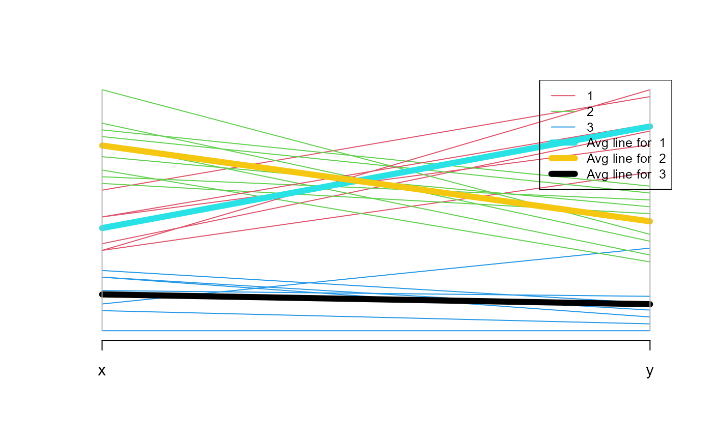
## $rect
## $rect$w
## [1] 0.241386
##
## $rect$h
## [1] 0.4538482
##
## $rect$left
## [1] 1.798614
##
## $rect$top
## [1] 1.04
##
##
## $text
## $text$x
## [1] 1.884276 1.884276 1.884276 1.884276 1.884276 1.884276
##
## $text$y
## [1] 0.9751645 0.9103291 0.8454936 0.7806582 0.7158227 0.6509873HierarchicalClustering()
id = c("1a", "1b", "1c", "1d", "1e", "1f", "1g", "2a", "2b", "2c", "2d", "3h", "3i", "3a",
"3b", "3c", "3d", "3e", "3f", "3g", "2g", "2h")
x = c(18, 21, 22, 24, 26, 26, 27, 30, 31, 35, 39, 40, 41, 42, 44, 46, 47, 48, 49, 54, 35, 30)
y = c(10, 11, 22, 15, 12, 13, 14, 33, 39, 37, 44, 27, 29, 20, 28, 21, 30, 31, 23, 24, 40, 45)
color = as.factor(c(0, 1, 0, 1, 0, 1, 0, 1, 0, 1, 0, 1, 0, 1, 0, 1, 0, 1, 0, 1, 0, 1))
example.data <- data.frame(id, x, y, color)
#dev.new()
plot(example.data$x, example.data$y)
text(example.data$x, example.data$y, labels = id, cex=0.9, font=2)
results <- HierarchicalClustering(working.data = example.data,
clustering.columns = c("x", "y"),
label.column.name = "id",
grouping.column.name = "color",
number.of.clusters.to.use = 3,
distance_method = "euclidean",
correlation_method = NULL,
linkage_method_type = "ward.D",
Use.correlation.for.hclust = FALSE,
terminal.branch.font.size = 1,
title.to.use = "Clustering based on x and y data")
hclust.res <- results[[1]]
dend <- results[[2]]
kcboot.res <- results[[3]]
title.to.use <- results[[4]]
labeled.samples <- results[[5]]
stability.table <- results[[6]]
#Plot dendrogram
plot(dend, main = title.to.use, cex.main = 0.75)
#Add legend to dendrogram
legend.labels.to.use <- levels(example.data[,"color"])
col.to.use <- as.integer(levels(example.data[,"color"])) + 1
pch.to.use <- rep(20, times = length(legend.labels.to.use))
graphics::legend("topright",
legend = legend.labels.to.use,
col = col.to.use,
pch = pch.to.use, bty = "n", pt.cex = 1.5, cex = 0.8 ,
text.col = "black", horiz = FALSE, inset = c(0, 0.1),
title = "Color")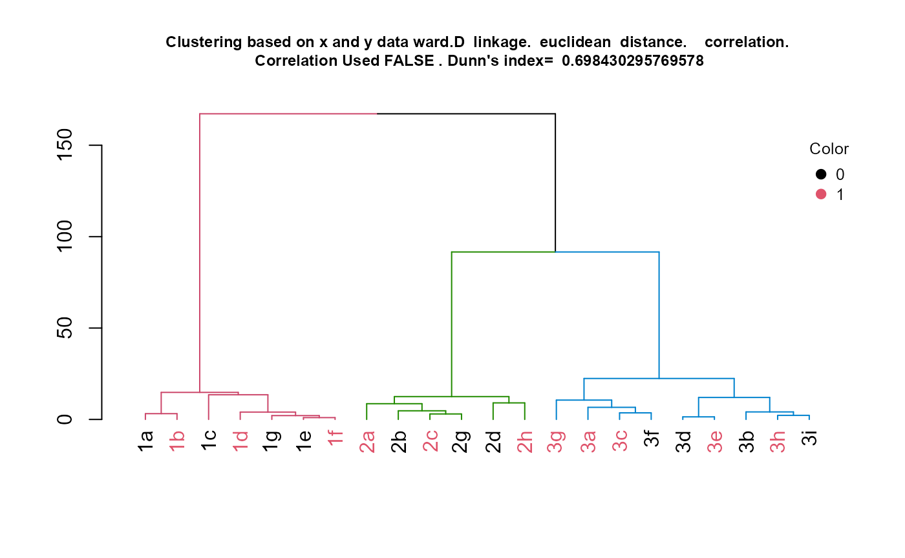
#Display sample assignment
labeled.samples## 1a 1b 1c 1d 1g 1e 1f 2a 2b 2c 2g 2d 2h 3g 3a 3c 3f 3d 3e 3b 3h 3i
## 1 1 1 1 1 1 1 2 2 2 2 2 2 3 3 3 3 3 3 3 3 3
#Display stability of clusters
plot(1,1)
gridExtra::grid.table(stability.table)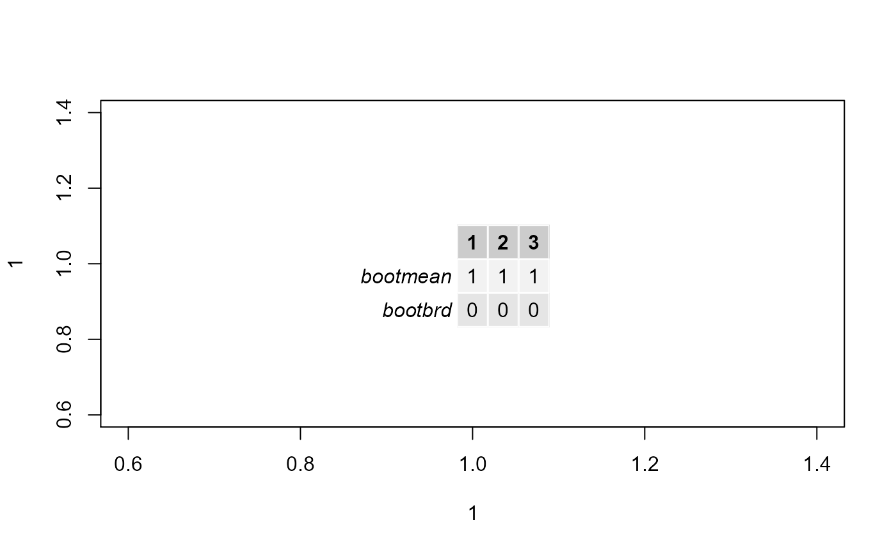
#Display kcboot full output
kcboot.res## * Cluster stability assessment *
## Cluster method: hclust
## Full clustering results are given as parameter result
## of the clusterboot object, which also provides further statistics
## of the resampling results.
## Number of resampling runs: 100
##
## Number of clusters found in data: 3
##
## Clusterwise Jaccard bootstrap (omitting multiple points) mean:
## [1] 1 1 1
## dissolved:
## [1] 0 0 0
## recovered:
## [1] 100 100 100Examples for classification
eval.classification.results()
id = c("1a", "1b", "1c", "1d", "1e", "1f", "1g", "2a", "2b", "2c", "2d", "2e", "2f", "3a",
"3b", "3c", "3d", "3e", "3f", "3g", "3h", "3i")
x = c(18, 21, 22, 24, 26, 26, 27, 30, 31, 35, 39, 35, 30, 40, 41, 42, 44, 46, 47, 48, 49, 54)
y = c(10, 11, 22, 15, 12, 13, 14, 33, 39, 37, 44, 40, 45, 27, 29, 20, 28, 21, 30, 31, 23, 24)
a = c(1, 1, 1, 1, 1, 1, 1, 1, 1, 1, 1, 1, 1, 1, 1, 1, 1, 1, 1, 1, 1, 1)
b = c(1, 1, 1, 1, 1, 1, 1, 1, 1, 1, 1, 1, 1, 1, 1, 1, 1, 1, 1, 1, 1, 1)
actual = as.factor(c("1", "1", "1", "1", "1", "1", "1", "2", "2", "2", "2", "2", "2", "3", "3", "3",
"3", "3", "3", "3", "3", "3"))
example.data <- data.frame(id, x, y, a, b, actual)
set.seed(2)
rf.result <- randomForest::randomForest(x=example.data[,c("x", "y", "a", "b")],
y=example.data[,"actual"], proximity=TRUE)
predicted <- rf.result$predicted
actual <- example.data[,"actual"]
eval.classification.results(actual, predicted, "Example")## [1] "The MCC (Matthews Correlation Coefficient is: 0.93319674101209"
## [1] 0.9331967
## [1] "Example"
## [1] "proportion of total classification correct: 95.4545454545455"
## [1] 95.45455
## [1] "proportion of classification correct for class 1 : 100"
## [1] 100
## [1] "proportion of classification correct for class 2 : 83.3333333333333"
## [1] 83.33333
## [1] "proportion of classification correct for class 3 : 100"
## [1] 100## [1] "Color represents the actual class. Y-value represents predicted class"
## [1] "Classes used by function"
## [1] 1 2 3
## [1] "Original classes in data"
## [1] 1 2 3
## Levels: 1 2 3find.best.number.of.trees()
id = c("1a", "1b", "1c", "1d", "1e", "1f", "1g", "2a", "2b", "2c", "2d", "2e",
"2f", "3a",
"3b", "3c", "3d", "3e", "3f", "3g", "3h", "3i")
x = c(18, 21, 22, 24, 26, 26, 27, 30, 31, 35, 39, 35, 30, 40, 41, 42, 44, 46,
47, 48, 49, 54)
y = c(10, 11, 22, 15, 12, 13, 14, 33, 39, 37, 44, 40, 45, 27, 29, 20, 28, 21,
30, 31, 23, 24)
a = c(1, 1, 1, 1, 1, 1, 1, 1, 1, 1, 1, 1, 1, 1, 1, 1, 1, 1, 1, 1, 1, 1)
b = c(1, 1, 1, 1, 1, 1, 1, 1, 1, 1, 1, 1, 1, 1, 1, 1, 1, 1, 1, 1, 1, 1)
actual = as.factor(c("1", "1", "1", "1", "1", "1", "1", "2", "2", "2", "2",
"2", "2", "3", "3", "3",
"3", "3", "3", "3", "3", "3"))
example.data <- data.frame(id, x, y, a, b, actual)
set.seed(1)
rf.result <- randomForest::randomForest(x=example.data[,c("x", "y", "a", "b")],
y=example.data[,"actual"], proximity=TRUE, ntree=50)
error.oob <- rf.result[[4]][,1]
best.tree <- find.best.number.of.trees(error.oob)
trees <- 1:length(error.oob)
plot(trees, error.oob, type = "l")LOOCVPredictionsRandomForestAutomaticMtryAndNtree()
id = c("1a", "1b", "1c", "1d", "1e", "1f", "1g", "2a", "2b", "2c", "2d", "2e", "2f", "3a",
"3b", "3c", "3d", "3e", "3f", "3g", "3h", "3i")
x = c(18, 21, 22, 24, 26, 26, 27, 30, 31, 35, 39, 35, 30, 40, 41, 42, 44, 46, 47, 48, 49, 54)
y = c(10, 11, 22, 15, 12, 13, 14, 33, 39, 37, 44, 40, 45, 27, 29, 20, 28, 21, 30, 31, 23, 24)
a = c(1, 1, 1, 1, 1, 1, 1, 1, 1, 1, 1, 1, 1, 1, 1, 1, 1, 1, 1, 1, 1, 1)
b = c(1, 1, 1, 1, 1, 1, 1, 1, 1, 1, 1, 1, 1, 1, 1, 1, 1, 1, 1, 1, 1, 1)
actual = as.factor(c("1", "1", "1", "1", "1", "1", "1", "2", "2", "2", "2", "2", "2",
"3", "3", "3",
"3", "3", "3", "3", "3", "3"))
example.data <- data.frame(id, x, y, a, b, actual)
result <- LOOCVPredictionsRandomForestAutomaticMtryAndNtree(example.data,
predictors.that.PCA.can.be.done.on = c("x", "y", "a", "b"),
predictors.that.should.not.PCA = NULL,
should.PCA.be.used = FALSE,
target.column.name = "actual",
seed=2,
percentile.threshold.to.keep = 0.5)## [1] 1
## [1] 2
## [1] 3
## [1] 4
## [1] 5
## [1] 6
## [1] 7
## [1] 8
## [1] 9
## [1] 10
## [1] 11
## [1] 12
## [1] 13
## [1] 14
## [1] 15
## [1] 16
## [1] 17
## [1] 18
## [1] 19
## [1] 20
## [1] 21
## [1] 22
predicted <- result[[1]]
actual <- example.data[,"actual"]
eval.classification.results(actual, predicted, "Example")## [1] "The MCC (Matthews Correlation Coefficient is: 0.93319674101209"
## [1] 0.9331967
## [1] "Example"
## [1] "proportion of total classification correct: 95.4545454545455"
## [1] 95.45455
## [1] "proportion of classification correct for class 1 : 100"
## [1] 100
## [1] "proportion of classification correct for class 2 : 83.3333333333333"
## [1] 83.33333
## [1] "proportion of classification correct for class 3 : 100"
## [1] 100## [1] "Color represents the actual class. Y-value represents predicted class"
## [1] "Classes used by function"
## [1] 1 2 3
## [1] "Original classes in data"
## [1] 1 2 3
## Levels: 1 2 3
result[[2]]## variables.with.sig.contributions
## y x
## 100 100LOOCVRandomForestClassificationMatrixForPheatmap()
#Make example data where samples with 1, 2, and 3 in their ID names can be
#predicted using features x and y, while samples with 4 and 5 in their ID names
#can be predicted using features a and b.
id = c("1a", "1b", "1c", "1d", "1e", "1f", "1g", "2a", "2b", "2c", "2d", "2e", "2f", "3a",
"3b", "3c", "3d", "3e", "3f", "3g", "3h", "3i",
"4a", "4b", "4c", "4d", "4e", "4f", "4g", "5a", "5b", "5c",
"5d", "5e", "5f", "5g")
x = c(18, 21, 22, 24, 26, 26, 27, 30, 31, 35, 39, 35, 30, 40, 41, 42, 44, 46, 47, 48, 49, 54,
1, 1, 1, 1, 1, 1, 1, 1, 1, 1, 1, 1, 1, 1)
y = c(10, 11, 22, 15, 12, 13, 14, 33, 39, 37, 44, 40, 45, 27, 29, 20, 28, 21, 30, 31, 23, 24,
1, 1, 1, 1, 1, 1, 1, 1, 1, 1, 1, 1, 1, 1)
a = c(1, 1, 1, 1, 1, 1, 1, 1, 1, 1, 1, 1, 1, 1, 1, 1, 1, 1, 1, 1, 1, 1,
18, 21, 22, 24, 26, 26, 27, 40, 41, 42, 44, 46, 47, 48)
b = c(1, 1, 1, 1, 1, 1, 1, 1, 1, 1, 1, 1, 1, 1, 1, 1, 1, 1, 1, 1, 1, 1,
10, 11, 22, 15, 12, 13, 14, 27, 29, 20, 28, 21, 30, 31)
sep.xy.ab = c("1/2/3", "1/2/3", "1/2/3", "1/2/3", "1/2/3", "1/2/3", "1/2/3",
"1/2/3", "1/2/3", "1/2/3", "1/2/3", "1/2/3", "1/2/3", "1/2/3", "1/2/3", "1/2/3",
"1/2/3", "1/2/3", "1/2/3", "1/2/3", "1/2/3", "1/2/3",
"4/5", "4/5", "4/5", "4/5", "4/5", "4/5", "4/5", "4/5", "4/5", "4/5", "4/5",
"4/5", "4/5", "4/5")
actual = as.factor(c("1", "1", "1", "1", "1", "1", "1", "2", "2", "2", "2",
"2", "2", "3", "3", "3",
"3", "3", "3", "3", "3", "3", "4", "4", "4", "4", "4", "4", "4", "5",
"5", "5", "5", "5", "5", "5"))
example.data <- data.frame(id, x, y, a, b, sep.xy.ab, actual)
#dev.new()
plot(example.data$x, example.data$y)
text(example.data$x, example.data$y,labels=example.data$id)
#dev.new()
plot(example.data$a, example.data$b)
text(example.data$a, example.data$b,labels=example.data$id)
result <- LOOCVRandomForestClassificationMatrixForPheatmap(input.data = example.data,
factor.name.for.subsetting = "sep.xy.ab",
name.of.predictors.to.use = c("x", "y", "a", "b"),
target.column.name = "actual",
seed = 2,
should.mtry.and.ntree.be.optimized = FALSE,
percentile.threshold.to.keep = 0.5)## [1] 1
## [1] 2
## [1] 3
## [1] 4
## [1] 5
## [1] 6
## [1] 7
## [1] 8
## [1] 9
## [1] 10
## [1] 11
## [1] 12
## [1] 13
## [1] 14
## [1] 15
## [1] 16
## [1] 17
## [1] 18
## [1] 19
## [1] 20
## [1] 21
## [1] 22
## [1] 1
## [1] 2
## [1] 3
## [1] 4
## [1] 5
## [1] 6
## [1] 7
## [1] 8
## [1] 9
## [1] 10
## [1] 11
## [1] 12
## [1] 13
## [1] 14
matrix.for.pheatmap <- result[[1]]
pheatmap_RF <- pheatmap::pheatmap(matrix.for.pheatmap, fontsize_col = 12, fontsize_row=12)
#The pheatmap shows that the points in groups 1, 2, and 3 can be predicted
#with features x and y. While points in group 4 and 5 can be predicted with
#features a and b.
#dev.new()
pheatmap_RFRandomForestAutomaticMtryAndNtree()
id = c("1a", "1b", "1c", "1d", "1e", "1f", "1g", "2a", "2b", "2c", "2d", "2e", "2f", "3a",
"3b", "3c", "3d", "3e", "3f", "3g", "3h", "3i")
x = c(18, 21, 22, 24, 26, 26, 27, 30, 31, 35, 39, 35, 30, 40, 41, 42, 44, 46, 47, 48, 49, 54)
y = c(10, 11, 22, 15, 12, 13, 14, 33, 39, 37, 44, 40, 45, 27, 29, 20, 28, 21, 30, 31, 23, 24)
a = c(1, 1, 1, 1, 1, 1, 1, 1, 1, 1, 1, 1, 1, 1, 1, 1, 1, 1, 1, 1, 1, 1)
b = c(1, 1, 1, 1, 1, 1, 1, 1, 1, 1, 1, 1, 1, 1, 1, 1, 1, 1, 1, 1, 1, 1)
actual = as.factor(c("1", "1", "1", "1", "1", "1", "1", "2", "2", "2", "2", "2",
"2", "3", "3", "3",
"3", "3", "3", "3", "3", "3"))
example.data <- data.frame(id, x, y, a, b, actual)
rf.result <- RandomForestAutomaticMtryAndNtree(example.data, c("x", "y", "a", "b"),
"actual", seed=2)
predicted <- rf.result$predicted
actual <- example.data[,"actual"]
#Result is not perfect because RF model does not over fit to the training data.
eval.classification.results(actual, predicted, "Example")## [1] "The MCC (Matthews Correlation Coefficient is: 0.93319674101209"
## [1] 0.9331967
## [1] "Example"
## [1] "proportion of total classification correct: 95.4545454545455"
## [1] 95.45455
## [1] "proportion of classification correct for class 1 : 100"
## [1] 100
## [1] "proportion of classification correct for class 2 : 83.3333333333333"
## [1] 83.33333
## [1] "proportion of classification correct for class 3 : 100"
## [1] 100## [1] "Color represents the actual class. Y-value represents predicted class"
## [1] "Classes used by function"
## [1] 1 2 3
## [1] "Original classes in data"
## [1] 1 2 3
## Levels: 1 2 3RandomForestClassificationGiniMatrixForPheatmap()
#Make example data where samples with 1, 2, and 3 in their ID names can be
#predicted using features x and y, while samples with 4 and 5 in their ID names
#can be predicted using features a and b.
id = c("1a", "1b", "1c", "1d", "1e", "1f", "1g", "2a", "2b", "2c", "2d", "2e", "2f", "3a",
"3b", "3c", "3d", "3e", "3f", "3g", "3h", "3i",
"4a", "4b", "4c", "4d", "4e", "4f", "4g", "5a", "5b", "5c",
"5d", "5e", "5f", "5g")
x = c(18, 21, 22, 24, 26, 26, 27, 30, 31, 35, 39, 35, 30, 40, 41, 42, 44, 46, 47, 48, 49, 54,
1, 1, 1, 1, 1, 1, 1, 1, 1, 1, 1, 1, 1, 1)
y = c(10, 11, 22, 15, 12, 13, 14, 33, 39, 37, 44, 40, 45, 27, 29, 20, 28, 21, 30, 31, 23, 24,
1, 1, 1, 1, 1, 1, 1, 1, 1, 1, 1, 1, 1, 1)
a = c(1, 1, 1, 1, 1, 1, 1, 1, 1, 1, 1, 1, 1, 1, 1, 1, 1, 1, 1, 1, 1, 1,
18, 21, 22, 24, 26, 26, 27, 40, 41, 42, 44, 46, 47, 48)
b = c(1, 1, 1, 1, 1, 1, 1, 1, 1, 1, 1, 1, 1, 1, 1, 1, 1, 1, 1, 1, 1, 1,
10, 11, 22, 15, 12, 13, 14, 27, 29, 20, 28, 21, 30, 31)
sep.xy.ab = c("1/2/3", "1/2/3", "1/2/3", "1/2/3", "1/2/3", "1/2/3", "1/2/3",
"1/2/3", "1/2/3", "1/2/3", "1/2/3", "1/2/3", "1/2/3", "1/2/3", "1/2/3", "1/2/3",
"1/2/3", "1/2/3", "1/2/3", "1/2/3", "1/2/3", "1/2/3",
"4/5", "4/5", "4/5", "4/5", "4/5", "4/5", "4/5", "4/5", "4/5", "4/5", "4/5",
"4/5", "4/5", "4/5")
actual = as.factor(c("1", "1", "1", "1", "1", "1", "1", "2", "2", "2", "2", "2", "2", "3", "3", "3",
"3", "3", "3", "3", "3", "3", "4", "4", "4", "4", "4", "4", "4", "5", "5", "5", "5", "5",
"5", "5"))
example.data <- data.frame(id, x, y, a, b, sep.xy.ab, actual)
#dev.new()
plot(example.data$x, example.data$y)
text(example.data$x, example.data$y,labels=example.data$id)
#dev.new()
plot(example.data$a, example.data$b)
text(example.data$a, example.data$b,labels=example.data$id)
matrix.for.pheatmap <- RandomForestClassificationGiniMatrixForPheatmap(input.data = example.data,
factor.name.for.subsetting = "sep.xy.ab",
name.of.predictors.to.use = c("x", "y", "a", "b"),
target.column.name = "actual",
seed = 2)
#Add MCC to column names
for(i in 1:dim(matrix.for.pheatmap)[2])
{
old.name <- colnames(matrix.for.pheatmap)[[i]]
MCC.val <- matrix.for.pheatmap[dim(matrix.for.pheatmap)[1],][[i]]
new.name <- paste(old.name, ", MCC: ", format(round(MCC.val, 2), nsmall = 2))
colnames(matrix.for.pheatmap)[[i]] <- new.name
}
#Remove MCC row from matrix
matrix.for.pheatmap.MCC.row.removed <- matrix.for.pheatmap[1:(dim(matrix.for.pheatmap)[1]-1),]
pheatmap_RF <- pheatmap::pheatmap(matrix.for.pheatmap.MCC.row.removed, fontsize_col = 12,
fontsize_row=12)
#The pheatmap shows that the points in groups 1, 2, and 3 can be predicted
#with features x and y. While points in group 4 and 5 can be predicted with
#features a and b.
#dev.new()
pheatmap_RF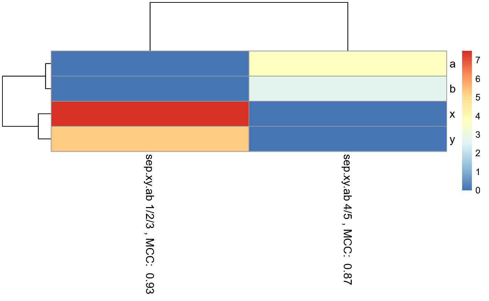
#Note that the 1/2/3 column is exactly the same as the random forest
#model created in the example for eval.classification.results.
#Since this pheatmap is using the number of LOOCV rounds
#as the input matrix, the colors can be misleading. It looks
#like features x and y are more important for 1/2/3 than features a and b
#is for 4/5. However, this is not the case. The mean decrease
#in gini index cannot be used to compare features between models. It
#can only be used to compare features within a single model.RandomForestClassificationPercentileMatrixForPheatmap()
#Make example data where samples with 1, 2, and 3 in their ID names can be
#predicted using features x and y, while samples with 4 and 5 in their ID names
#can be predicted using features a and b.
id = c("1a", "1b", "1c", "1d", "1e", "1f", "1g", "2a", "2b", "2c", "2d", "2e", "2f", "3a",
"3b", "3c", "3d", "3e", "3f", "3g", "3h", "3i",
"4a", "4b", "4c", "4d", "4e", "4f", "4g", "5a", "5b", "5c",
"5d", "5e", "5f", "5g")
x = c(18, 21, 22, 24, 26, 26, 27, 30, 31, 35, 39, 35, 30, 40, 41, 42, 44, 46, 47, 48, 49, 54,
1, 1, 1, 1, 1, 1, 1, 1, 1, 1, 1, 1, 1, 1)
y = c(10, 11, 22, 15, 12, 13, 14, 33, 39, 37, 44, 40, 45, 27, 29, 20, 28, 21, 30, 31, 23, 24,
1, 1, 1, 1, 1, 1, 1, 1, 1, 1, 1, 1, 1, 1)
a = c(1, 1, 1, 1, 1, 1, 1, 1, 1, 1, 1, 1, 1, 1, 1, 1, 1, 1, 1, 1, 1, 1,
18, 21, 22, 24, 26, 26, 27, 40, 41, 42, 44, 46, 47, 48)
b = c(1, 1, 1, 1, 1, 1, 1, 1, 1, 1, 1, 1, 1, 1, 1, 1, 1, 1, 1, 1, 1, 1,
10, 11, 22, 15, 12, 13, 14, 27, 29, 20, 28, 21, 30, 31)
sep.xy.ab = c("1/2/3", "1/2/3", "1/2/3", "1/2/3", "1/2/3", "1/2/3", "1/2/3",
"1/2/3", "1/2/3", "1/2/3", "1/2/3", "1/2/3", "1/2/3", "1/2/3", "1/2/3", "1/2/3",
"1/2/3", "1/2/3", "1/2/3", "1/2/3", "1/2/3", "1/2/3",
"4/5", "4/5", "4/5", "4/5", "4/5", "4/5", "4/5", "4/5", "4/5", "4/5", "4/5",
"4/5", "4/5", "4/5")
actual = as.factor(c("1", "1", "1", "1", "1", "1", "1", "2", "2", "2", "2", "2", "2",
"3", "3", "3",
"3", "3", "3", "3", "3", "3", "4", "4", "4", "4", "4", "4", "4", "5", "5", "5",
"5", "5", "5", "5"))
example.data <- data.frame(id, x, y, a, b, sep.xy.ab, actual)
#dev.new()
plot(example.data$x, example.data$y)
text(example.data$x, example.data$y,labels=example.data$id)
#dev.new()
plot(example.data$a, example.data$b)
text(example.data$a, example.data$b,labels=example.data$id)
matrix.for.pheatmap <- RandomForestClassificationPercentileMatrixForPheatmap(
input.data = example.data,
factor.name.for.subsetting = "sep.xy.ab",
name.of.predictors.to.use = c("x", "y", "a", "b"),
target.column.name = "actual",
seed = 2)
pheatmap_RF <- pheatmap::pheatmap(matrix.for.pheatmap, fontsize_col = 12, fontsize_row=12)
#The pheatmap shows that the points in groups 1, 2, and 3 can be predicted
#with features x and y. While points in group 4 and 5 can be predicted with
#features a and b.
#dev.new()
pheatmap_RF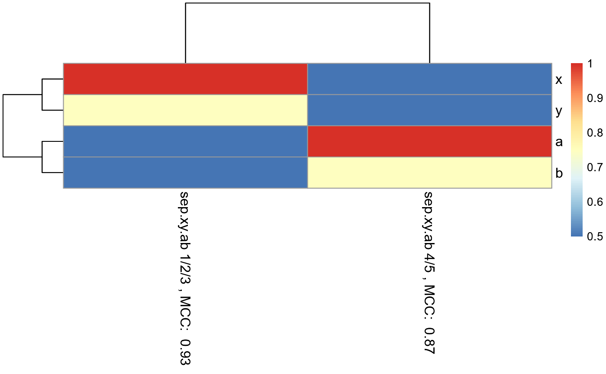
CVPredictionsRandomForest()
example.data <- GenerateExampleDataMachinelearnr()
set.seed(1)
example.data.shuffled <- example.data[sample(nrow(example.data)),]
result.CV <- CVPredictionsRandomForest(inputted.data = example.data.shuffled,
name.of.predictors.to.use = c("x", "y", "a", "b"),
target.column.name = "actual",
seed = 2,
percentile.threshold.to.keep = 0.5,
number.of.folds = nrow(example.data))## [1] 1
## [1] 2
## [1] 3
## [1] 4
## [1] 5
## [1] 6
## [1] 7
## [1] 8
## [1] 9
## [1] 10
## [1] 11
## [1] 12
## [1] 13
## [1] 14
## [1] 15
## [1] 16
## [1] 17
## [1] 18
## [1] 19
## [1] 20
## [1] 21
## [1] 22
## [1] 23
## [1] 24
## [1] 25
## [1] 26
## [1] 27
## [1] 28
## [1] 29
## [1] 30
## [1] 31
## [1] 32
## [1] 33
## [1] 34
## [1] 35
## [1] 36
#Predicted
result.CV[[1]]## 4 1 34 23 11 14 18 27 19 35 21 26 10 22 31 24 7 9 15 5 28 16 33 17 13 2
## 1 1 5 4 3 3 3 4 3 5 3 4 2 3 5 4 1 2 3 1 4 3 5 3 2 1
## 25 30 36 20 29 8 3 32 12 6
## 5 5 5 3 4 2 1 5 2 1
#Feature importance
result.CV[[2]]## variables.with.sig.contributions
## x y a
## 100.00 97.22 2.78CVRandomForestClassificationMatrixForPheatmap()
example.data <- GenerateExampleDataMachinelearnr()
set.seed(1)
example.data.shuffled <- example.data[sample(nrow(example.data)),]
result.two.fold.CV <- CVRandomForestClassificationMatrixForPheatmap(
input.data = example.data.shuffled,
factor.name.for.subsetting = "sep.xy.ab",
name.of.predictors.to.use = c("x", "y", "a", "b"),
target.column.name = "actual",
seed = 2,
percentile.threshold.to.keep = 0.5,
number.of.folds = 2)## [1] 1
## [1] 2
## [1] 1
## [1] 2
matrix.for.pheatmap <- result.two.fold.CV[[1]]
pheatmap_RF <- pheatmap::pheatmap(matrix.for.pheatmap, fontsize_col = 12, fontsize_row=12)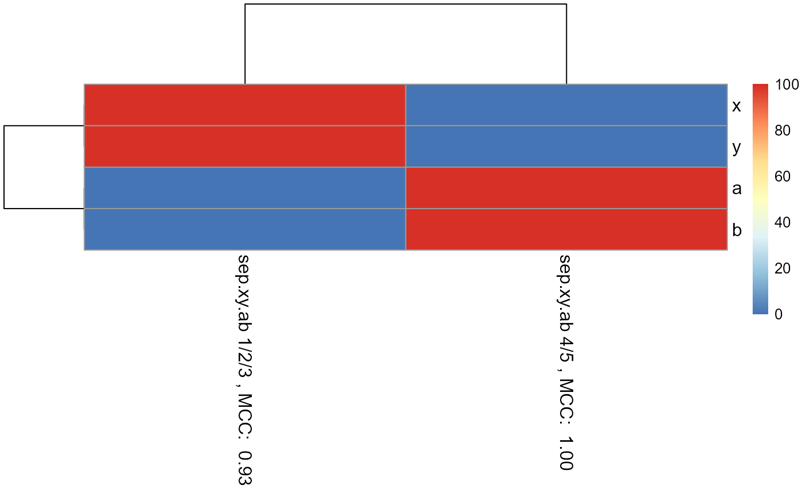